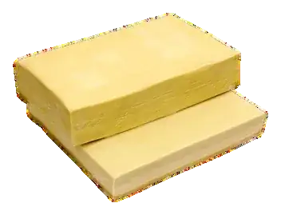

26 × 32 cm
Massa para pastel, canudinho e lasanha
Massa 26 × 32 cm
Praticidade para lanches e salgados, nível de crocância elevado e fácil manuseio.
Pedir informações →Fabricante de massas • Limoeiro do Norte - CE
Há mais de 30 anos, a Pôr do Sol Alimentos produz massas para pastéis, mini pizzas, pães árabes e outros produtos relacionados, atendendo diferentes perfis de consumidores e negócios.

Produtos apresentados no catálogo institucional da marca.
Linha Pôr do Sol
Informações, formatos e quantidades abaixo seguem o material institucional fornecido pela Pôr do Sol Alimentos.
Praticidade para lanches e salgados, nível de crocância elevado e fácil manuseio.
Pedir informações →Praticidade para lanches e salgados, nível de crocância elevado e fácil manuseio.
Pedir informações →15 cm de diâmetro / 500 g e 10 cm de diâmetro / 200 g, com praticidade e fácil manuseio.
Pedir informações →Praticidade, preparo rápido e fácil manuseio. O catálogo informa 24 unidades por pacote.
Pedir informações →Praticidade, preparo rápido e fácil manuseio. O catálogo informa 5 unidades por pacote.
Pedir informações →Praticidade, preparo rápido e fácil manuseio. O catálogo informa 5 unidades por pacote.
Pedir informações →Praticidade, preparo rápido e fácil manuseio. O catálogo informa 50 unidades por pacote.
Pedir informações →Conheça a Pôr do Sol
A Pôr do Sol Alimentos é uma fabricante de massas em Limoeiro do Norte - CE. O catálogo informa atuação regional e presença em distribuidores e redes de supermercado.
✓Campo fabril de 250 m²
Dimensão informada no material institucional.
✓Linha abrangente
Produtos para diferentes necessidades de consumo e negócio.
✓Foco no consumidor
Praticidade, qualidade e confiabilidade aparecem como compromissos da marca.
Marco apresentado no catálogo e no selo da marca.
Mais de 30 anos de atuação, segundo o material institucional.
Campo fabril informado no catálogo.
Presença regional apresentada pela empresa.
Compromisso com o consumidor
O material institucional destaca o foco em contribuir para a praticidade, qualidade e bem-estar no dia a dia dos consumidores.
Produtos com preparo simples e fácil manuseio.
Massas para pastel, pizzas, pão árabe, canudinhos e produtos relacionados.
Uma trajetória construída desde 1995.
Atendimento comercial
Fale com o comercial para consultar disponibilidade e atendimento para seu estabelecimento.
Contato oficial